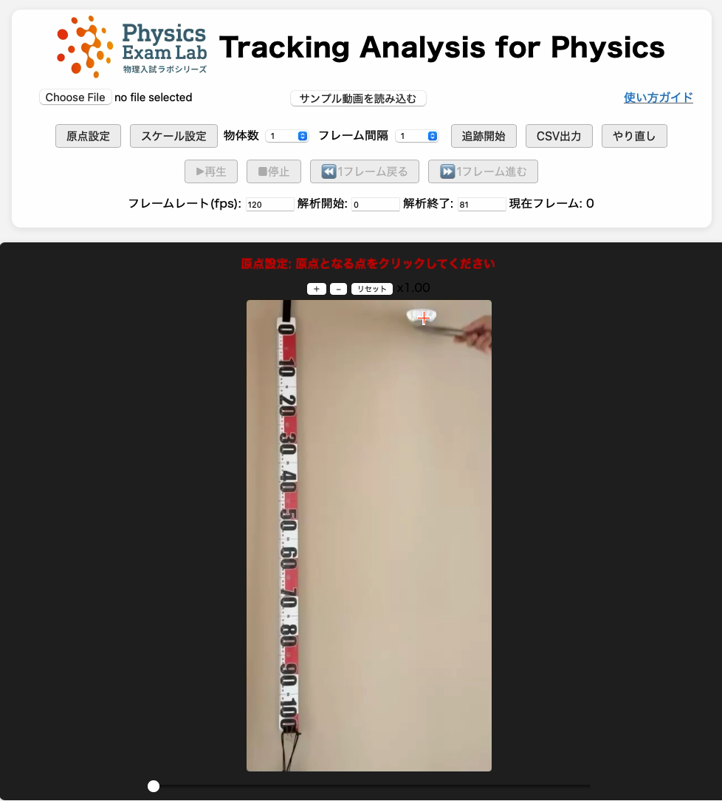
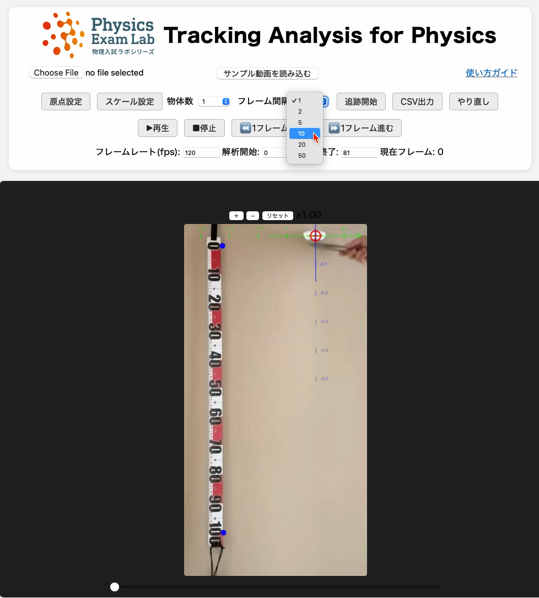
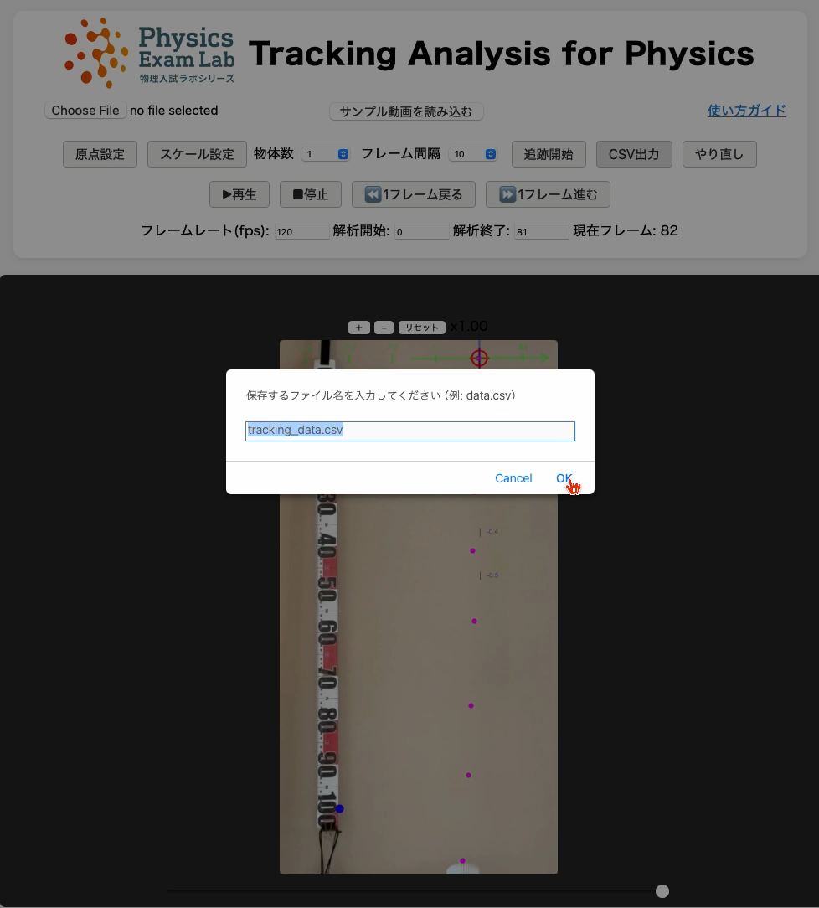

このガイドでは、2023年共通テストで出題されたアルミカップを落とす実験を原典とし、解析の流れを静止画で直感的に説明します。
下図は実験のイメージです。
ここでは、サンプル動画（5cups.mov）を「サンプル動画を読み込む」ボタンで読み込み、それを解析する例を示しています。
実際に例として見せている動画では、カップが5枚重ねてあります（n=5）。
サンプル動画で練習する場合は「サンプル動画を読み込む」ボタンを、
ご自身の動画を使う場合は「Choose File」ボタンで動画（mp4, mov等）を選んでください。
動画を開いた直後に「フレームレート(fps)」を入力します（この例では120に設定）。
動画下のスライダーで内容を確認し、必要に応じて「解析開始」「解析終了」のフレーム数も入力してください。
原点設定：「原点設定」ボタンで原点（例：解析開始フレームでの物体の位置）をクリック

「フレーム間隔」を入力（例：10）。この例では10フレームごとに追跡します。

「追跡開始」ボタンで物体の位置（例：カップの重心付近）を各フレームでクリックして記録。
指定したフレーム間隔ごと（この例では0, 10, 20, 30フレーム目など）に赤点が記録されていきます。
「CSV出力」ボタンで記録データをダウンロードできます

書き出したCSVファイルはExcelなどで簡単にグラフ化できます。
右図は、5つ重ねたアルミカップの落下実験データをExcelでグラフ化し、データの後半（速度が安定した区間）を直線フィットした例です。
直線にきれいに乗っており、カップが一定速度で落下していることが分かります。